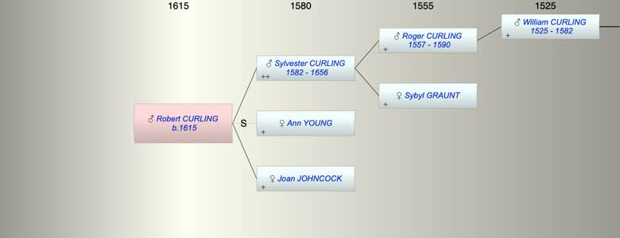

| [Index] |
| Robert CURLING (1615 - ) |
|  |
| b. 1615 at St Peter, Thanet |
| Parents: |
| Sylvester CURLING (1582 - 1656) |
| Joan JOHNCOCK |
| Siblings (1): |
| Michael CURLING (1608 - 1685) |
| Events in Robert CURLING (1615 - )'s life | |||||
| Date | Age | Event | Place | Notes | Src |
| 1615 | Robert CURLING was born | St Peter, Thanet | Note 1 | ||
| 1656 | 41 | Death of father Sylvester CURLING (aged 74) | St Lawrence | Note 2 | |
| Note 1: bap St Peters 9 Jul 1615 son of Sylvester ex FMP PR |
| Note 2: ?? buried St Lawrence 20 Sep 1656 ex FMP |
| Created on a Mac™ using iFamily for Mac™ on 8 Oct 2023 |